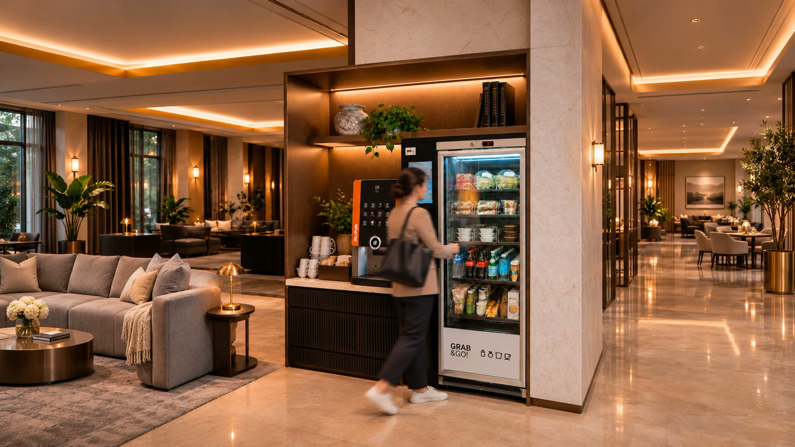
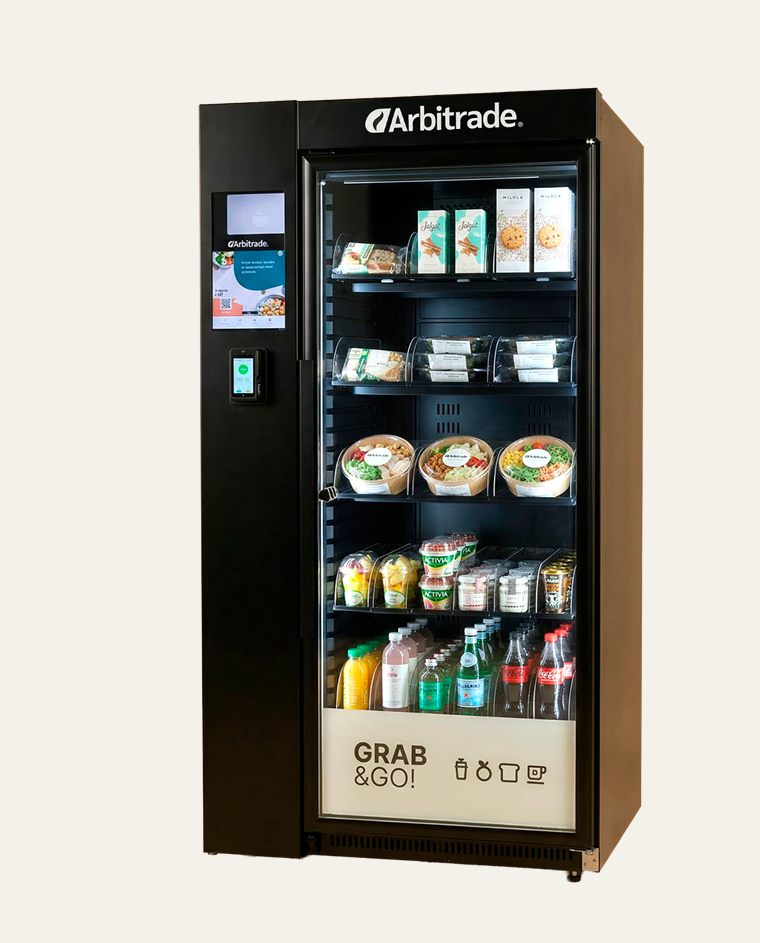
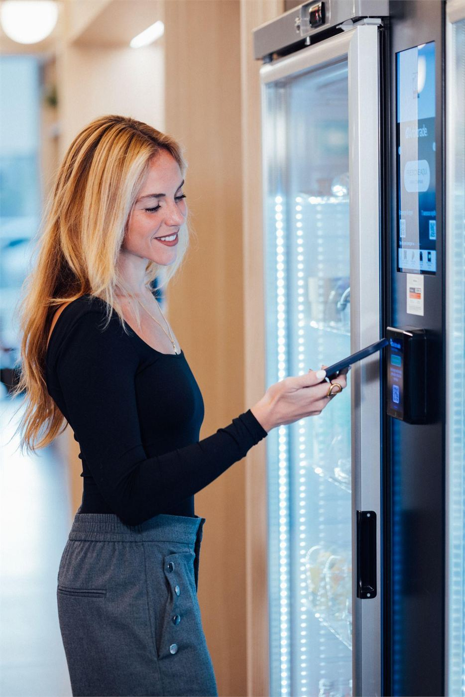
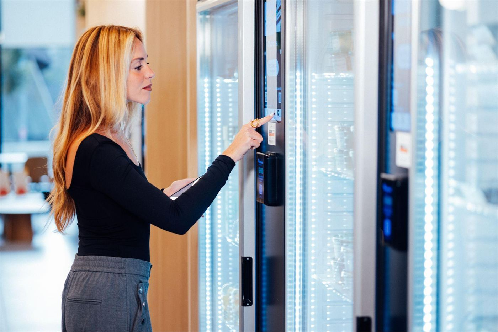
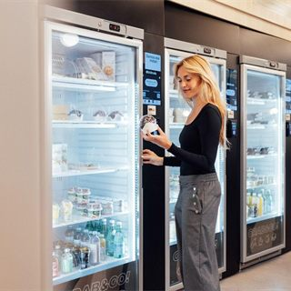
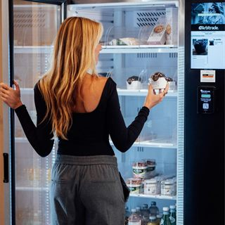
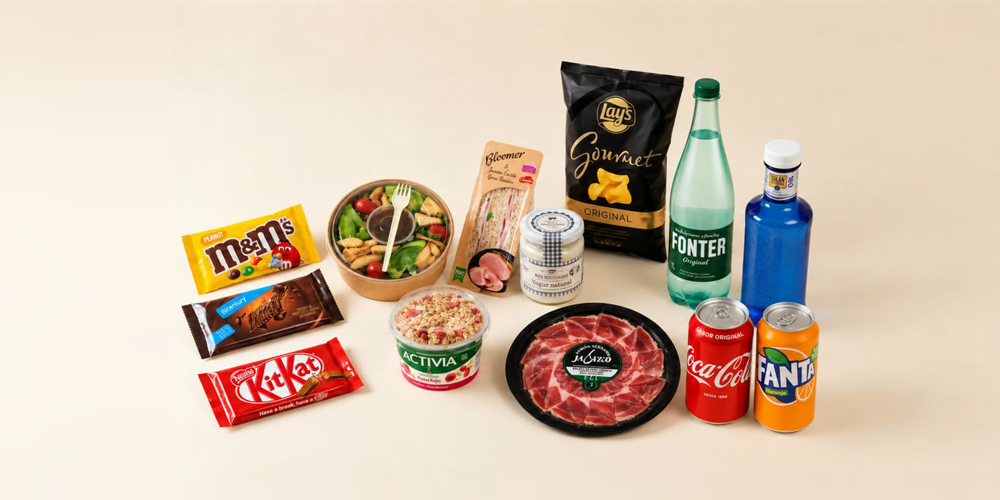
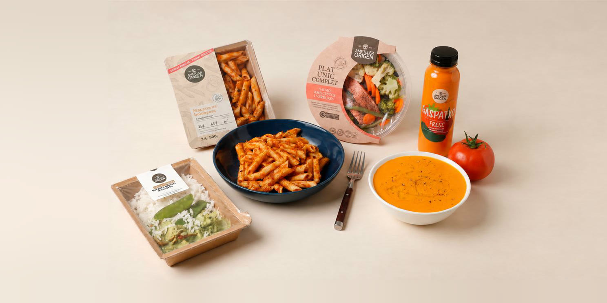
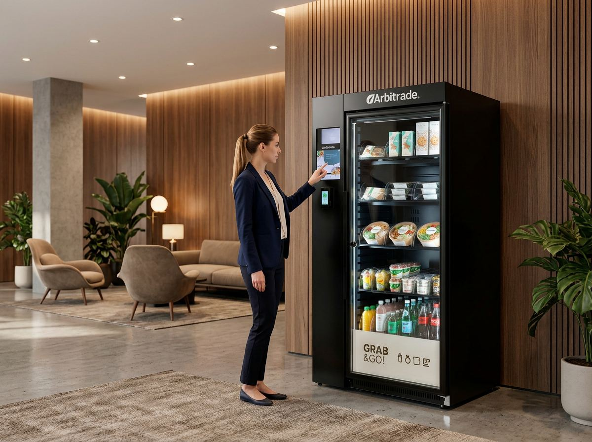

Se abre con tarjeta o móvil
Tarjeta bancaria, wallet del móvil o la app.
Arbitrade presenta
Así de fácil es comprar en una SmartShop.

SmartShops
Retail desatendido tipo Grab & Go. Sin espirales, sin colas y sin nada que teclear.

Tarjeta bancaria, wallet del móvil o la app.
Te llevas todo lo que quieras de una vez.
Al cerrar identifica lo retirado y cobra solo.
Paso a paso




Gama y modelos
En ambos casos, Arbitrade se encarga de la instalación, la puesta en marcha, la reposición y el mantenimiento. Tú eliges el tipo de surtido que mejor encaja en tu espacio.

Elegimos contigo los productos y revisamos el planograma, de pequeños snacks a platos de gran tamaño.

Platos, cremas, ensaladas, yogures y kéfir de una marca consolidada, completados por Arbitrade.
Imágenes orientativas.
Ventajas únicas

Comida variada sin salir del trabajo.
Siempre abierto, sin personal en sala.
Desde un módulo hasta una tienda completa.
Diseño cuidado, lejos del vending tradicional.
Más de 30 opciones para elegir.
Nos adaptamos al espacio y a cada necesidad.
Así puede integrarse una SmartShop en tu espacio
El siguiente paso es una visita sin coste ni compromiso. Analizamos tus necesidades y te presentamos una propuesta a medida.